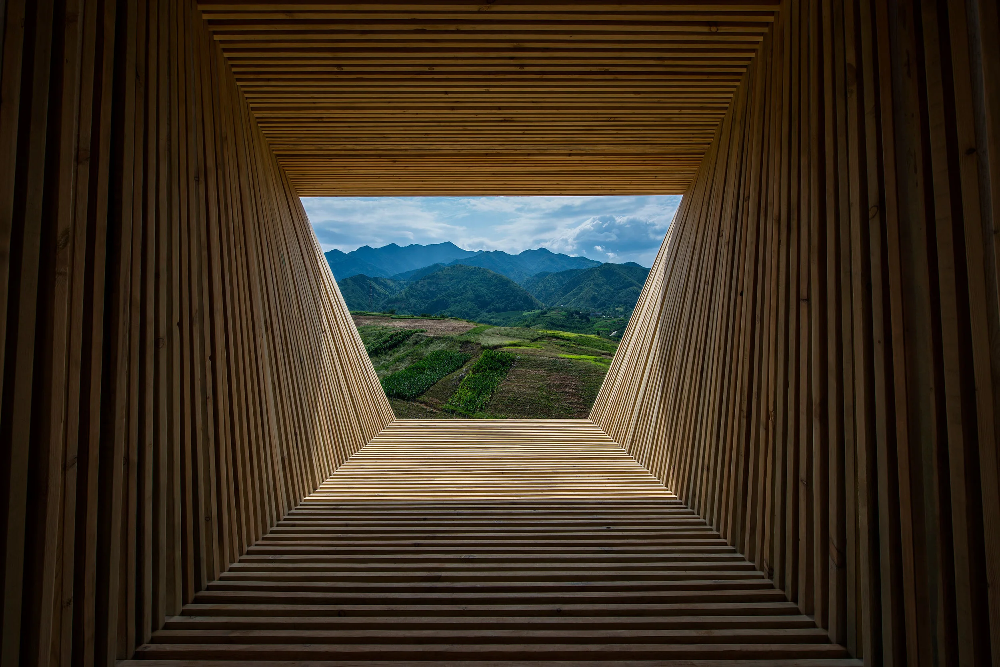

Digital Archive
Living in Modernism: Video Series
Interviews and tours through the private residences that shaped the Canberra aesthetic.
Watch Now
Season 2026
A curated series of events across Canberra's mid-century architectural landscape.
View all events
Interviews and tours through the private residences that shaped the Canberra aesthetic.
Watch NowDownload maps and walk through Canberra's modernist buildings at your own pace.
This month: The Edmund Barton Building and its rhythmic concrete fins.